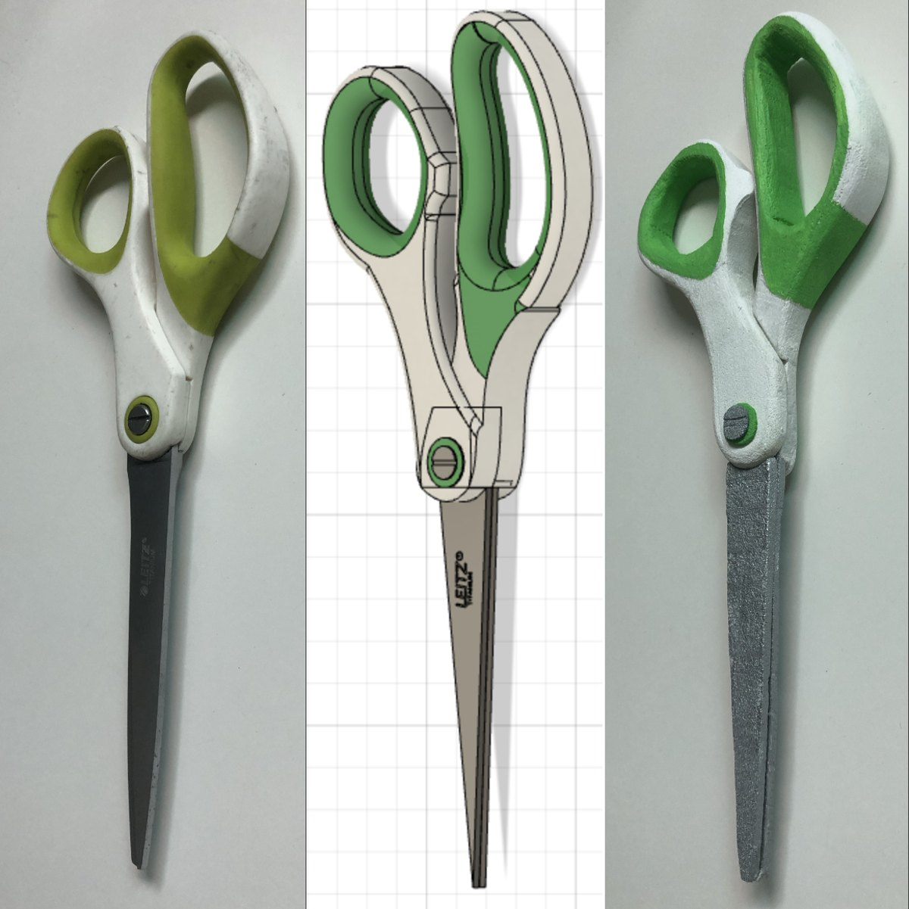

An exact copy of a pair of Leitz scissors, built twice: as a rendered Fusion 360 model and as a hand-made foam model, then tested against the original.

The brief asked for an aesthetic model: pick a product you own and replicate it as a CAD model and as a physical model, to judge its size and looks. Neither has to work. I chose Leitz scissors, with curved two-colour grips, a pivot screw and two blades.
I had to keep the original with me the whole time, so every shape, width and colour could be checked against it. The same brief asked me to plan three tests, run them and say how to improve.
Three things stood out when I compared the original, the CAD model and the physical model. Open one to see what I did and what I would change.
These are the measurements from my size experiment, in millimetres. The limit I set was 2 mm. Move the slider to see how many measurements would pass with a stricter or looser limit.
Pick a step to see what I did and what went wrong.
This is how my replicate differs from the original, and what I would do next time. Switch between the two.
Each test had a method and a success rule that I wrote before testing. Open a row to see the result.